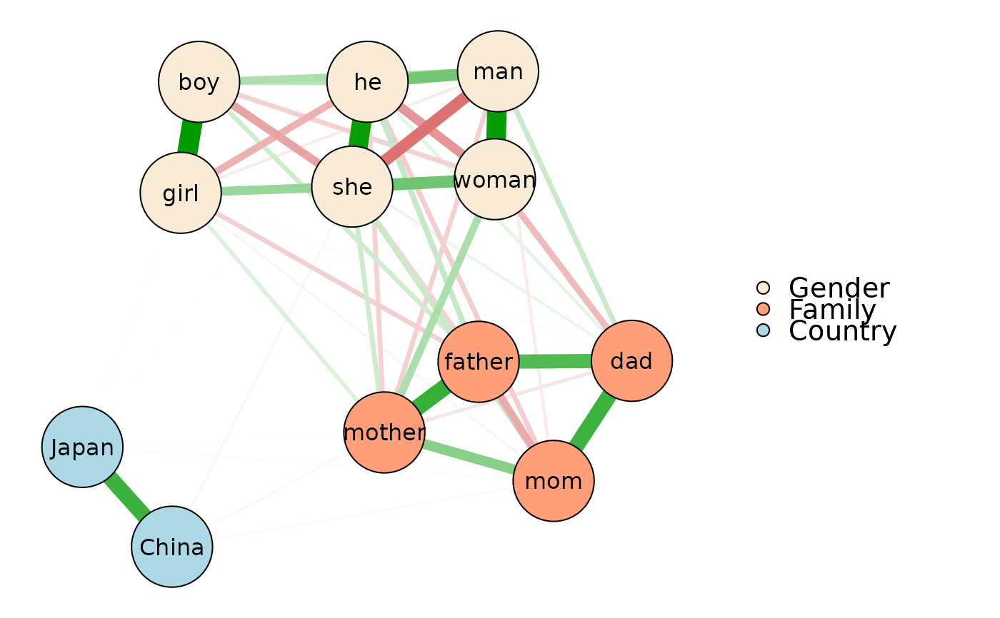
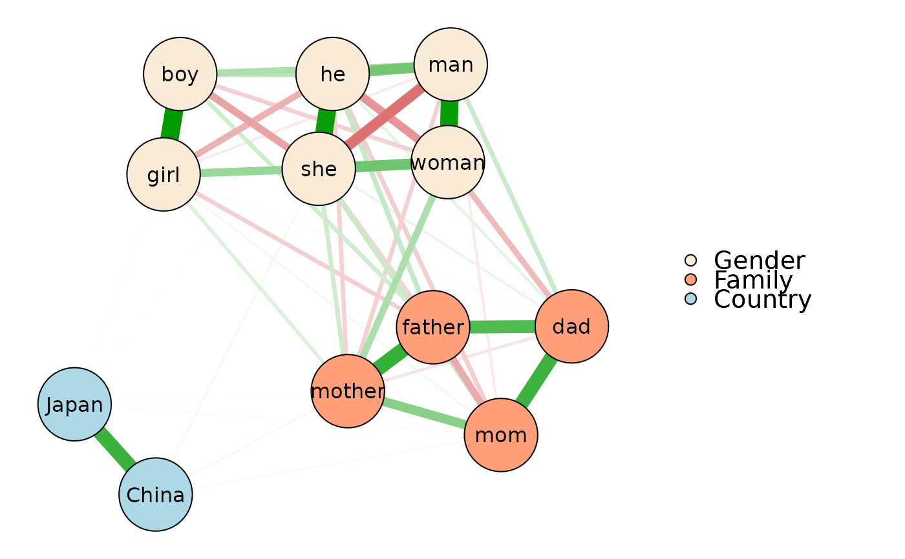

Visualize a (partial correlation) network graph of words.
Usage
plot_network(
data,
words = NULL,
pattern = NULL,
index = c("pcor", "cor", "glasso", "sim"),
alpha = 0.05,
bonf = FALSE,
max = NULL,
node.size = "auto",
node.group = NULL,
node.color = NULL,
label.text = NULL,
label.size = 1.2,
label.size.equal = TRUE,
label.color = "black",
edge.color = c("#009900", "#BF0000"),
edge.label = FALSE,
edge.label.size = 1,
edge.label.color = NULL,
edge.label.bg = "white",
file = NULL,
width = 10,
height = 6,
dpi = 500,
...
)Arguments
- data
A
wordvec(data.table) orembed(matrix), seedata_wordvec_load.- words
[Option 1] Character string(s).
- pattern
[Option 2] Regular expression (see
str_subset). If neitherwordsnorpatternare specified (i.e., both areNULL), then all words in the data will be extracted.- index
Use which index to perform network analysis? Can be
"pcor"(partial correlation, default and suggested),"cor"(raw correlation),"glasso"(graphical lasso-estimation of partial correlation matrix using theglassopackage), or"sim"(pairwise cosine similarity).- alpha
Significance level to be used for not showing edges. Defaults to
0.05.- bonf
Bonferroni correction of p value. Defaults to
FALSE.- max
Maximum value for scaling edge widths and colors. Defaults to the highest value of the index. Can be
1if you want to compare several graphs.- node.size
Node size. Defaults to 8*exp(-nNodes/80)+1.
- node.group
Node group(s). Can be a named list (see examples) in which each element is a vector of integers identifying the numbers of the nodes that belong together, or a factor.
- node.color
Node color(s). Can be a character vector of colors corresponding to
node.group. Defaults to white (ifnode.groupis not specified) or the palette of ggplot2 (ifnode.groupis specified).- label.text
Node label of text. Defaults to original words.
- label.size
Node label font size. Defaults to
1.2.- label.size.equal
Make the font size of all labels equal. Defaults to
TRUE.- label.color
Node label color. Defaults to
"black".- edge.color
Edge colors for positive and negative values, respectively. Defaults to
c("#009900", "#BF0000").- edge.label
Edge label of values. Defaults to
FALSE.- edge.label.size
Edge label font size. Defaults to
1.- edge.label.color
Edge label color. Defaults to
edge.color.- edge.label.bg
Edge label background color. Defaults to
"white".- file
File name to be saved, should be png or pdf.
- width, height
Width and height (in inches) for the saved file. Defaults to
10and6.- dpi
Dots per inch. Defaults to
500(i.e., file resolution: 4000 * 3000).- ...
Other parameters passed to
qgraph.
Download
Download pre-trained word vectors data (.RData):
https://psychbruce.github.io/WordVector_RData.pdf
Examples
d = as_embed(demodata, normalize=TRUE)
words = cc("
man, woman,
he, she,
boy, girl,
father, mother,
mom, dad,
China, Japan
")
plot_network(d, words)
 p = plot_network(
d, words,
node.group=list(Gender=1:6, Family=7:10, Country=11:12),
node.color=c("antiquewhite", "lightsalmon", "lightblue"),
file="network.png")
#> ✔ Saved to /home/runner/work/PsychWordVec/PsychWordVec/docs/reference/network.png
plot(p)
p = plot_network(
d, words,
node.group=list(Gender=1:6, Family=7:10, Country=11:12),
node.color=c("antiquewhite", "lightsalmon", "lightblue"),
file="network.png")
#> ✔ Saved to /home/runner/work/PsychWordVec/PsychWordVec/docs/reference/network.png
plot(p)
 unlink("network.png") # delete file for code check
# network analysis with centrality plot (see `qgraph` package)
qgraph::centralityPlot(p, include="all", scale="raw",
orderBy="Strength")
# graphical lasso-estimation of partial correlation matrix
plot_network(
d, words,
index="glasso",
# threshold=TRUE,
node.group=list(Gender=1:6, Family=7:10, Country=11:12),
node.color=c("antiquewhite", "lightsalmon", "lightblue"))
#> Warning: A dense regularized network was selected (lambda < 0.1 * lambda.max). Recent work indicates a possible drop in specificity. Interpret the presence of the smallest edges with care. Setting threshold = TRUE will enforce higher specificity, at the cost of sensitivity.

unlink("network.png") # delete file for code check
# network analysis with centrality plot (see `qgraph` package)
qgraph::centralityPlot(p, include="all", scale="raw",
orderBy="Strength")
# graphical lasso-estimation of partial correlation matrix
plot_network(
d, words,
index="glasso",
# threshold=TRUE,
node.group=list(Gender=1:6, Family=7:10, Country=11:12),
node.color=c("antiquewhite", "lightsalmon", "lightblue"))
#> Warning: A dense regularized network was selected (lambda < 0.1 * lambda.max). Recent work indicates a possible drop in specificity. Interpret the presence of the smallest edges with care. Setting threshold = TRUE will enforce higher specificity, at the cost of sensitivity.
